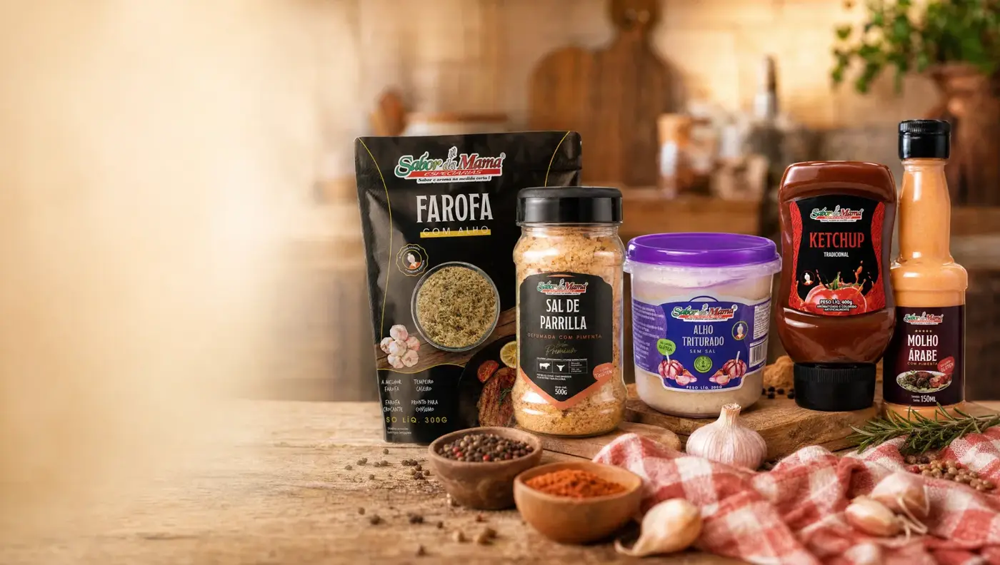
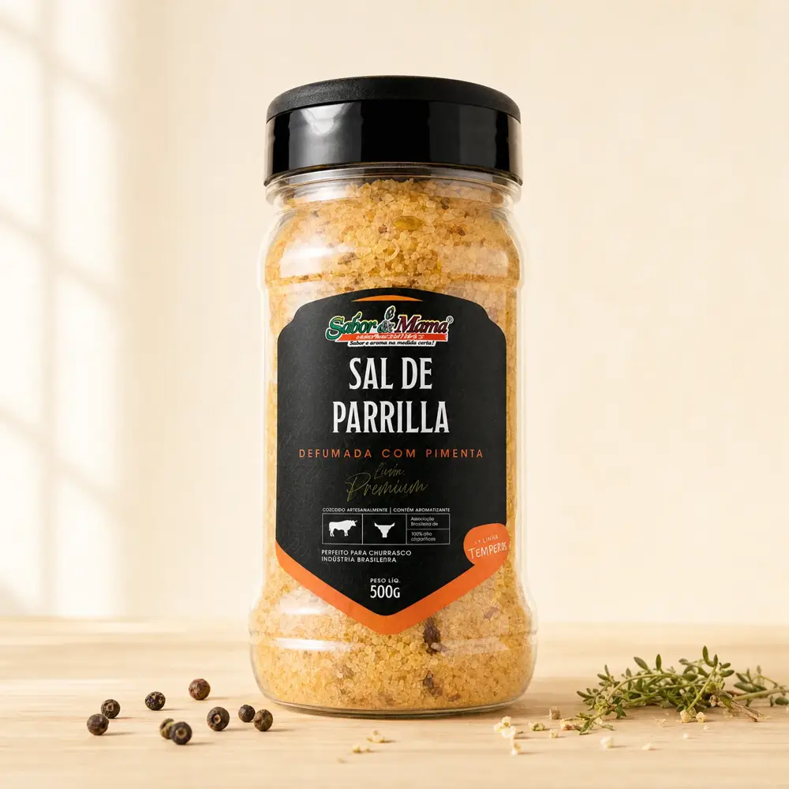
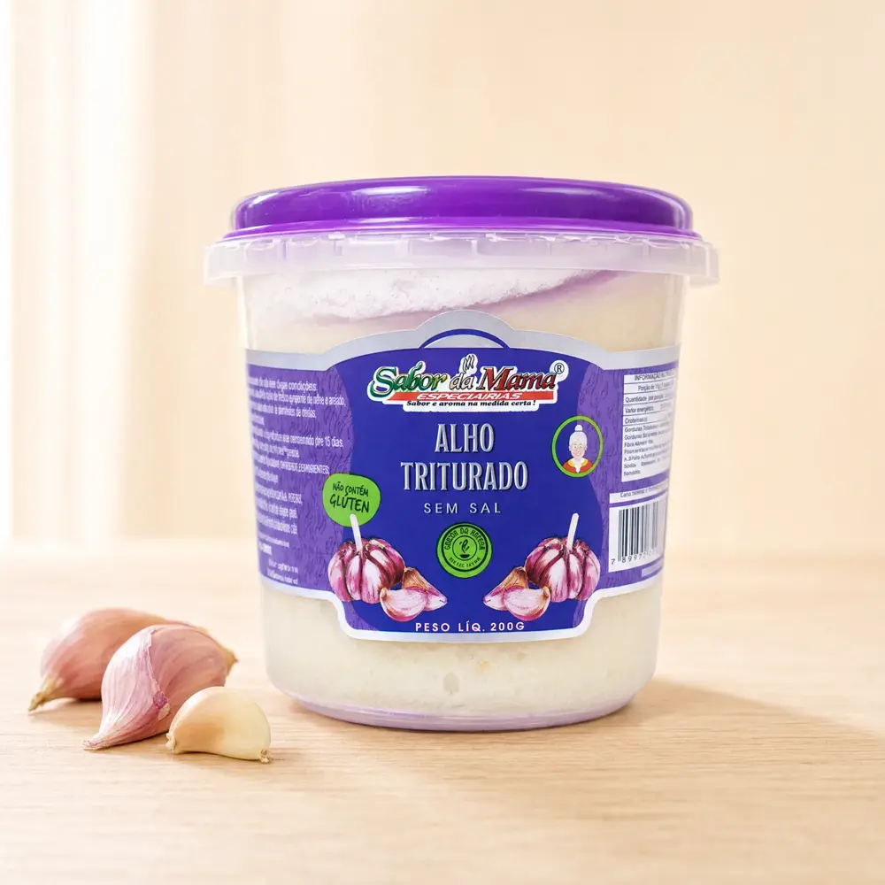
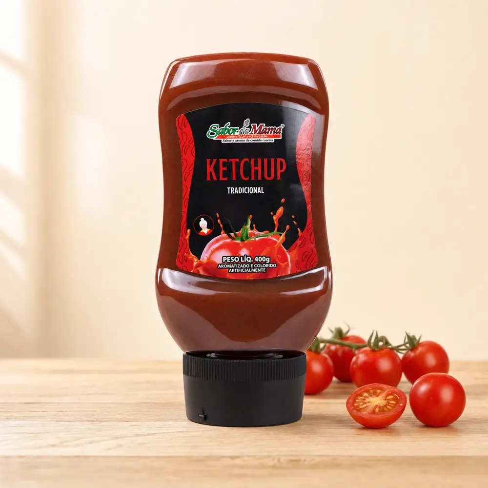
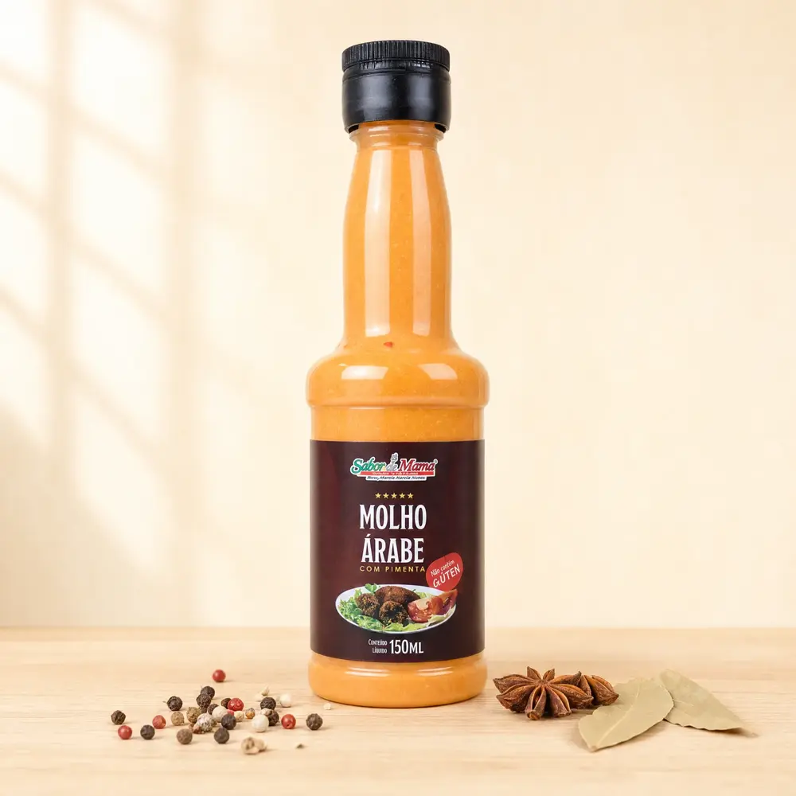
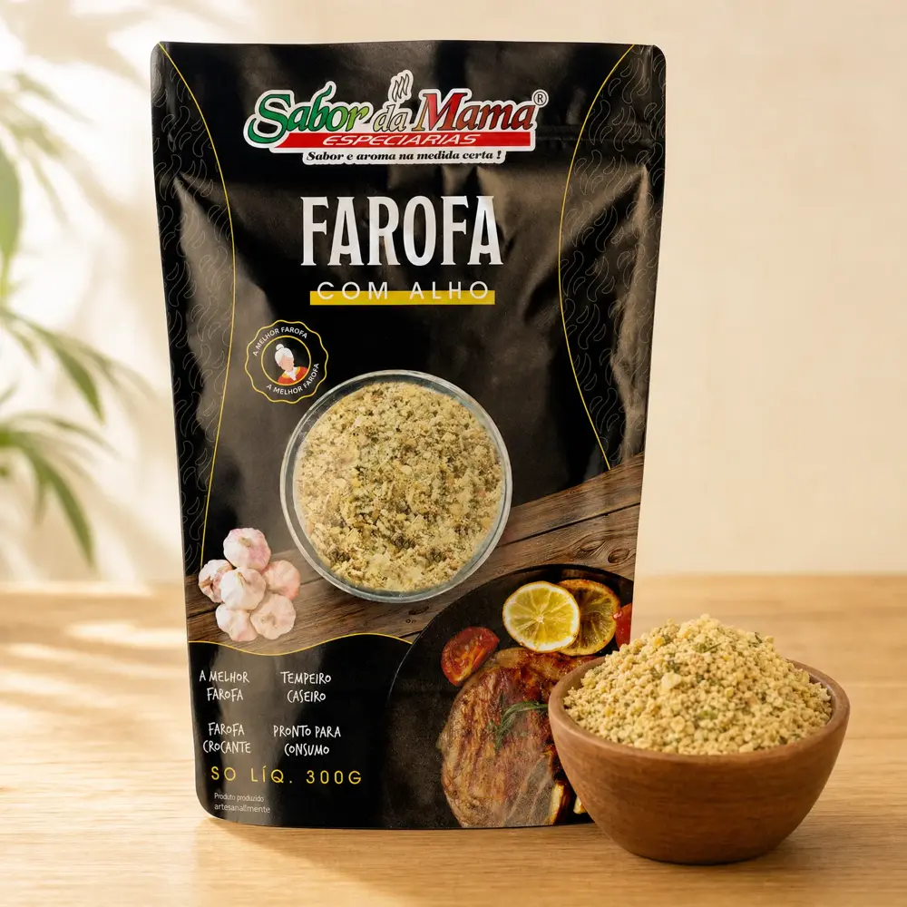

Nossos produtos

Sal de Parrilla
Perfeito para carnes, o Sal de Parrilla traz o equilíbrio ideal de temperos e sabor!
Defumada com pimenta

Alho Triturado
O sabor do alho, sem complicação! Seus pratos ficam mais saborosos e fáceis de preparar!
Sem sal

Ketchup
Sabor caseiro em cada gota de ketchup! Realça o sabor das suas receitas com um toque irresistível!
Tradicional

Molho Árabe
O toque especial das suas receitas árabes!
Com pimenta

Farofa
Com Farofa Sabor da Mama, tudo fica mais gostoso!
Com alho
Virei fã e não troco por nada!
Quando eu comprei não imaginava que era tão bom assim. Foi uma surpresa muito agradável.
Comprei e adorei!
A tapioca é
muito boa!
Seja um Franqueado
Sabor da Mama
A Sabor da Mama está crescendo e estamos criando lojas em todo o Brasil. Vamos juntos compartilhar os melhores temperos!
- Mais de 16 anos no mercado
- Ingredientes de qualidade
- Lojas em todo o Brasil
- Linha completa de temperos, molhos e derivados